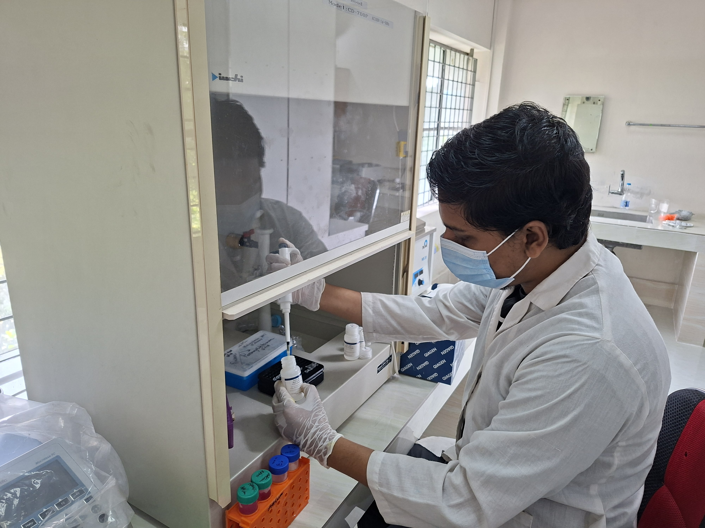

Research Interest
Vector biology, Arthropod and Helminth Parasitology, Neurobiology
Ecology and Evolutionary Biology, Insecticide Resistance Genetics
Neuro-immune Regulation, Molecular biology, Computational biology
One Health and Epidemiology, and Precision Agriculture Applications in Disease Control.